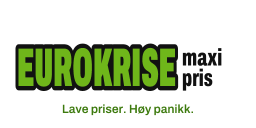
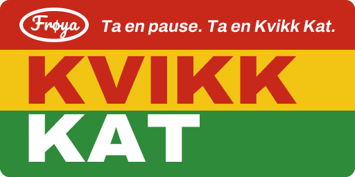
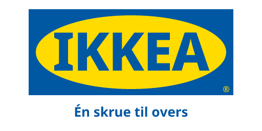

How it works
"You are at the bakery. You want bread, and the baker asks if it should be sliced." Every scene is a moment you will meet in Norway, from the till to the parents' meeting.
Your line is on the screen with its meaning in your language. Listen first if you like, then say it out loud. No typing, no word puzzles.
A speech model on your phone gives up to three stars and points at the sounds that matter, like takk and tak. Your voice never leaves the phone.
The other person replies, sometimes in their own dialect, and the scene moves on. Tap a reply to see it written and translated.
Listen to a few lines
A Norway that looks familiar
Shops and apps in the scenes are friendly parodies, so you can laugh at the till before you get there.



Six languages to learn from
Hundreds of scenes, from your first "hei" to irony at the Christmas table, and more arrive in the app without an update.